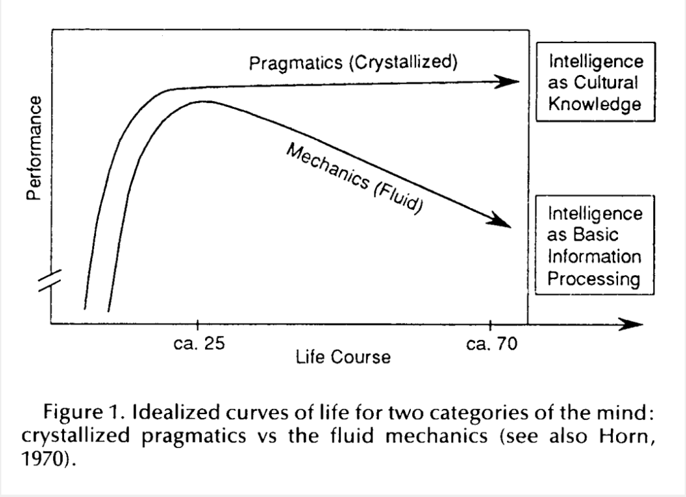

한국의 초고령 미래
5살 아이의 눈으로 바라본 인구 변화의 여정
스크롤하여 시작하세요
2025년, 평범한 하루
5살 아이의 키 높이에서 바라본 서울의 거리입니다. 10명 중 2명이 65세 이상이지만, 아직은 활기찬 도시의 모습을 유지하고 있습니다.
2070년의 충격
거리를 걷다 마주치는 2명 중 1명이 노인입니다.
이것은 상상이 아닌, 통계청이 예측한 우리의 미래입니다.
출산율이 만드는 두 가지 미래
현재 시나리오
0.7명
급격한 인구 감소와 극심한 고령화. 2070년 인구의 절반이 노인이 됩니다.
대체 출산율
2.1명
균형 잡힌 인구 구조. 지속 가능한 사회 시스템을 유지할 수 있습니다.
시뮬레이션에서 출산율을 조절하고 미래가 어떻게 바뀌는지 확인해보세요.
연령별 인구 분포의 변화
AI와 함께하는 고령 사회
인간과 AI의 협업
연구에 따르면, 노년층의 결정 지능(축적된 지혜)은 나이가 들어도 유지되거나 향상됩니다. AI는 감소하는 유동 지능(정보 처리 속도)을 보완하여, 모든 세대가 생산적으로 기여할 수 있는 사회를 만들 수 있습니다.
부양의 부담
생산가능인구(15-64세)가 부양해야 할 유소년과 노년 인구의 비율 변화를 시뮬레이션으로 확인하세요.
우리가 만들어갈 미래
초고령 사회는 피할 수 없는 현실입니다.
하지만 그 미래의 모습은 오늘 우리의 선택에 달려 있습니다.
이 시뮬레이션은 단순한 숫자가 아닌,
우리 모두의 이야기입니다.